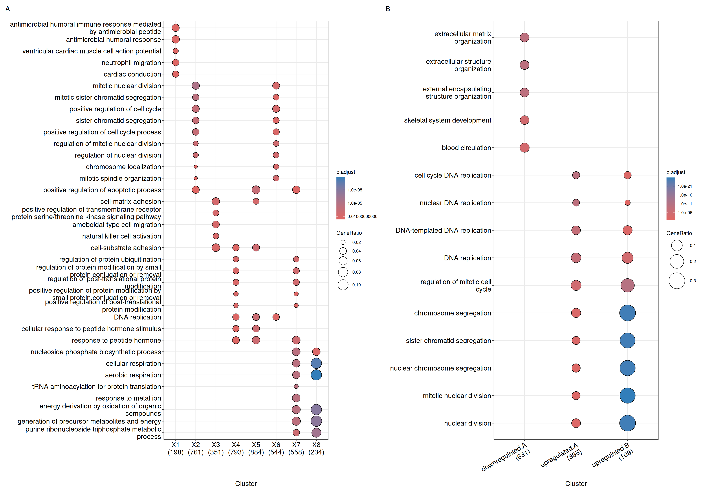
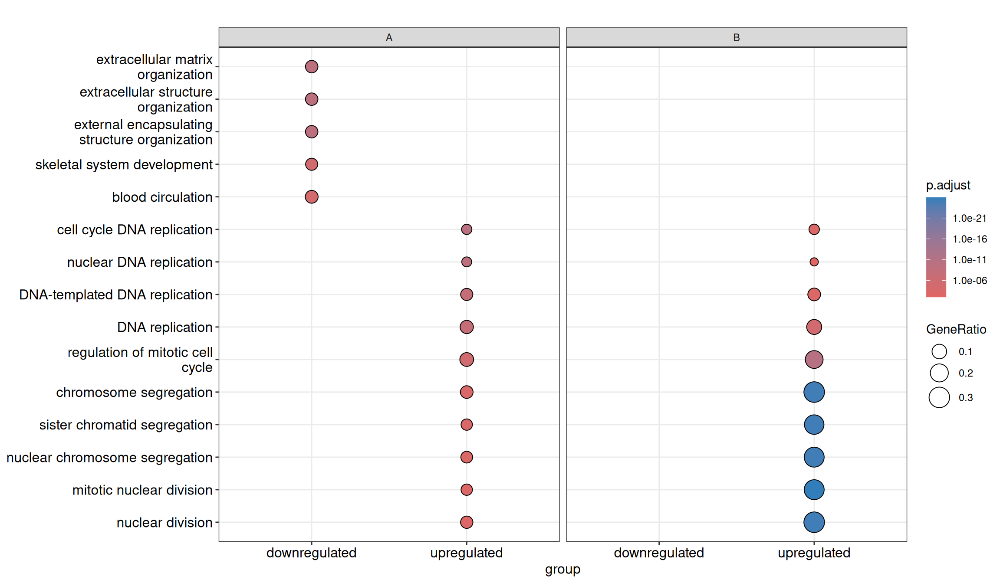
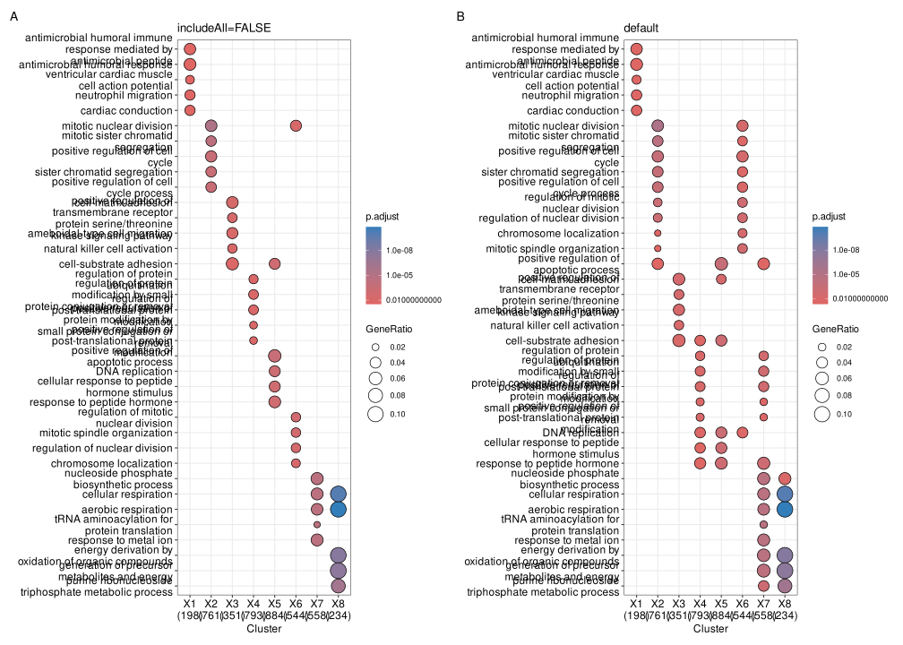

dotplot(ck)
dotplot(formula_res)31 Visualizing compared enrichment profiles
This chapter answers the presentation question: how can shared and condition-specific enrichment be shown without hiding the comparison structure? The examples use a locally reconstructed compareClusterResult; they do not depend on objects created by the analysis chapter.
31.1 Chapter overview
| View | What it emphasizes | Main control |
|---|---|---|
| Dot plot | Term significance and size across clusters | showCategory, includeAll, x, and size |
| Gene–concept network | Gene/term membership and cluster composition | showCategory, includeAll, categorySizeBy, and cluster colors |
| Formula-aware comparison | One grouping variable on the x-axis and another in facets | x plus facet_grid() |
31.2 Visualization of functional profile comparison
31.2.1 Dot plot
We can visualize the result using the dotplot() method.

The formula interface allows more complicated gene cluster definition. In Figure 31.1(B), the gene clusters were defined by two variables (i.e. group that divides genes into upregulated and downregulated and othergroup that divides the genes into two categories of A and B.). The dotplot() function allows us to use one variable to divide the result into different facet and plot the result with other variables in each facet panel (Figure 31.2).
dotplot(formula_res, x="group") + facet_grid(~othergroup)
By default, only the top 5 (most significant) categories of each cluster are shown. Users can change showCategory to specify how many categories should be displayed for each cluster, and if showCategory is set to NULL, the whole result will be plotted. The showCategory parameter also accepts a character vector of selected categories to plot pathways of interest.
dotplot() tries to make the comparison among different clusters more informative and reasonable. After extracting, for example, 10 categories for each cluster, clusterProfiler collects overlap of these categories among clusters. For example, term A may be enriched in all gene clusters (e.g., g1 and g2) and ranked among the 10 most significant categories of g1 but not of g2. In this case, clusterProfiler will still include term A in the g2 cluster to make the comparison more reasonable.
This feature ensures that if a term is significant and selected for one cluster, its statistics in other clusters are also displayed, allowing for a valid comparison. Consequently, the number of categories shown for some clusters might exceed the showCategory limit (e.g., 15 categories shown for g2 while showCategory is 10). Disabling this by setting includeAll = FALSE in dotplot() may result in a plot that suggests zero overlap between clusters, which can be misleading (see Figure 31.3 A vs B) and is not recommended.
The same selection logic is used by cnetplot() for compareCluster() results. In both functions, a numeric showCategory selects the top terms within each cluster by default, while includeAll controls whether matched terms from other clusters should be retained for comparison.
p1 <- dotplot(ck, showCategory=5, includeAll=FALSE) + ggtitle("includeAll=FALSE")
p2 <- dotplot(ck, showCategory=5) + ggtitle("default")
plot_list(p1, p2, ncol=2, tag_levels='A')
includeAll=FALSE produces a plot that strictly follows showCategory but may hide overlapping terms. (B) The default behavior (includeAll=TRUE) recovers the missing overlap information, making the comparison more reasonable.
The dotplot() function accepts a parameter size for setting the scale of dot sizes. The default parameter size is set to geneRatio, which corresponds to the GeneRatio column of the output. If it is set to count, the comparison will be based on gene counts, while if set to rowPercentage, the dot sizes will be normalized by count/(sum of each row). Users can also map the dot size to other variables or derived variables (see result-object manipulation).
To provide the full information, we also provide number of identified genes in each category (numbers in parentheses) when by is set to rowPercentage and number of gene clusters in each cluster label (numbers in parentheses) when by is set to geneRatio, as shown in Figure 31.1.
The p-values indicate which categories are more likely to have biological meanings. The dots in the plot are color-coded based on their corresponding adjusted p-values. Color gradient ranging from red to blue corresponds to the order of increasing adjusted p-values. That is, red indicates low p-values (high enrichment), and blue indicates high p-values (low enrichment). Adjusted p-values were filtered out by the threshold given by the parameter pvalueCutoff, and FDR can be estimated by qvalue.
31.2.2 Gene-Concept Network
The cnetplot also works with compareCluster() result. For compareClusterResult objects, enriched terms are drawn as pies so that the composition of each term across gene clusters can be displayed directly in the network. Like dotplot(), a numeric showCategory selects the top enriched terms within each cluster by default, and includeAll = TRUE keeps comparable terms from other clusters in the plot.
cluster_cols <- setNames(
## `length.out` keeps the palette the same length as the number of clusters:
## indexing a two-colour vector by the cluster count would leave every
## cluster past the second one without a colour (`NA`), which shows up as an
## empty legend entry and an unpainted pie.
rep(c("#0072B2", "#D55E00"), length.out = length(unique(as.data.frame(ck)$Cluster))),
unique(as.data.frame(ck)$Cluster)
)
p1 <- cnetplot(ck, showCategory = 3)
p2 <- cnetplot(ck, showCategory = 3, includeAll = FALSE)
p3 <- cnetplot(ck, showCategory = 3, categorySizeBy = ~ -log10(p.adjust))
p4 <- cnetplot(ck, showCategory = 3, categorySizeBy = 2) +
scale_fill_manual(values = cluster_cols)
plot_list(p1, p2, p3, p4, ncol = 2, tag_levels = "A")
cnetplot() for comparing functional profiles of multiple gene clusters. Default per-cluster selection (A), includeAll = FALSE (B), categorySizeBy = ~ -log10(p.adjust) (C), and custom pie colors (D).
Compared with ordinary enrichment results, there are several useful parameters to keep in mind for compareCluster() output:
showCategory = 3means that the top 3 enriched terms are selected within each cluster by default.showCategorycan also be a character vector if you want to display a manually selected set of terms.includeAll = TRUEkeeps comparable terms that also appear in other clusters; setincludeAll = FALSEif you only want the directly selected terms.categorySizeBycontrols the size of category pies and supports expressions such as~itemNum,~p.adjust, or~ -log10(p.adjust).- Pie colors are mapped to
Cluster, so custom cluster colors can be supplied withggplot2::scale_fill_manual().
Because the default cluster colors are taken from the set of clusters actually present in the plot, the scale can shift when a cluster has no enriched terms (i.e. when it disappears from the network). Supplying an explicit fixed palette with scale_fill_manual(values = ...) (as in Figure 31.4) keeps the same cluster consistently colored across plots, which makes interpretation easier when comparing multiple networks or when some clusters lack enriched terms.
Data attributes carried by compareCluster() that are shared with ordinary enrichment results can also be mapped to node / edge aesthetics — size_category / size_item / size_edge control the relative node and edge sizes, and color_edge = "category" colors edges by their term. (Note that foldChange coloring of gene nodes, demonstrated in the cnetplot section, is designed for ordinary enrichResult / gseaResult objects rather than for the pie-composed compareCluster network.)
As in dotplot(), the split parameter can be used when term selection should be carried out within another grouping variable rather than only by cluster. For example, when GO enrichment is performed with ont = "ALL", users can select the top terms within each ontology:
ck_all <- compareCluster(
geneCluster = gcSample,
fun = enrichGO,
OrgDb = org.Hs.eg.db,
ont = "ALL"
)
ck_all <- setReadable(ck_all, OrgDb = org.Hs.eg.db, keyType = "ENTREZID")
cnetplot(ck_all, showCategory = 3, split = "ONTOLOGY")31.3 Summary
The comparison function was designed as a framework for comparing gene clusters of any kind of ontology associations, not only groupGO, enrichGO, enrichKEGG, and enricher that were provided in this package, but also other biological and biomedical ontologies, including but not limited to enrichPathway, enrichDO, and enrichMeSH.
In (Yu et al. 2012), we analyzed the publicly available expression dataset of breast tumor tissues from 200 patients (GSE11121, Gene Expression Omnibus) (Schmidt et al. 2008). We identified 8 gene clusters from differentially expressed genes, and used the compareCluster() function to compare these gene clusters by their enriched biological process. In (Wu et al. 2021), we analyzed the GSE8057 dataset which contains expression data from ovarian cancer cells at multiple time points and under two treatment conditions. Eight groups of DEG lists were analyzed simultaneously using compareCluster() with WikiPathways. The result indicates that the two drugs have distinct effects at the beginning but consistent effects in the later stages (Fig. 4 of (Wu et al. 2021)).
31.4 Next steps
- Use the comparison analysis workflow to change gene lists, formula terms, or enrichment functions.
- For other comparison plots, see enrichplot comparison views.
- For network interpretation, continue to gene–term and term–term networks.
- For biological reporting, continue to evidence-guided interpretation.
References
Schmidt, Marcus, Daniel B?hm, Christian von T?rne, et al. 2008. “The Humoral Immune System Has a Key Prognostic Impact in Node-Negative Breast Cancer.” Cancer Research 68 (13): 5405–13. https://doi.org/10.1158/0008-5472.CAN-07-5206.
Wu, Tianzhi, Erqiang Hu, Shuangbin Xu, et al. 2021. “clusterProfiler 4.0: A Universal Enrichment Tool for Interpreting Omics Data.” The Innovation 2 (3): 100141. https://doi.org/10.1016/j.xinn.2021.100141.
Yu, Guangchuang, Le-Gen Wang, Yanyan Han, and Qing-Yu He. 2012. “clusterProfiler: An r Package for Comparing Biological Themes Among Gene Clusters.” OMICS: A Journal of Integrative Biology 16 (5): 284–87. https://doi.org/10.1089/omi.2011.0118.